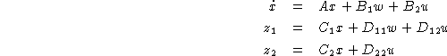
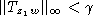
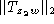
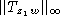
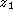
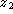
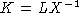
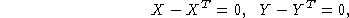
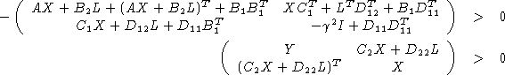

Consider the linear system

The mixed control problem consists in finding a stabilizing feedback which yields  and minimizes  where  and denote respectively the closed-loop transfer functions from w to  and  . In [3], it is shown that the solution to this problem can be expressed as  where X and L are obtained from the problem of minimizing Trace(Y) subject to:

and

To solve this problem with lmisolver, we define the evaluation function:
function [LME,LMI,OBJ]=h2hinf_eval(XLIST)
[X,Y,L]=XLIST(:)
LME=list(X-X',Y-Y');
LMI=list(-[A*X+B2*L+(A*X+B2*L)'+B1*B1',X*C1'+L'*D12'+B1*D11';...
(X*C1'+L'*D12'+B1*D11')',-gamma^2*eye+D11*D11'],...
[Y,C2*X+D22*L;(C2*X+D22*L)',X])
OBJ=trace(Y);
and use it as follows:
--> X_init=zeros(A); Y_init=zeros(C2*C2'); L_init=zeros(B2') --> XLIST0=list(X_init,Y_init,L_init); --> XLISTF=lmisolver(XLIST0,h2hinf_eval); --> [X,Y,L]=XLISTF(:)